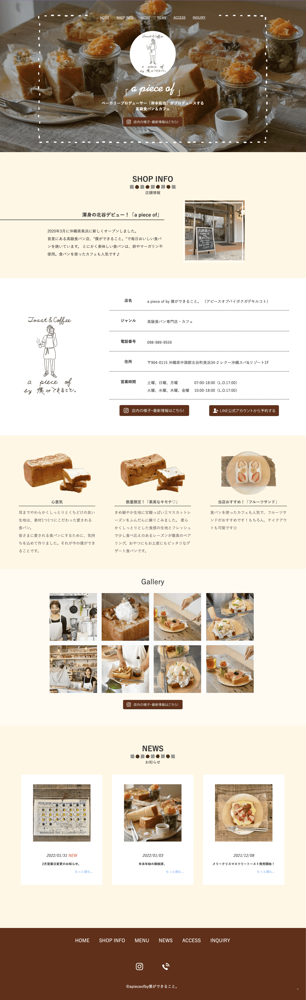
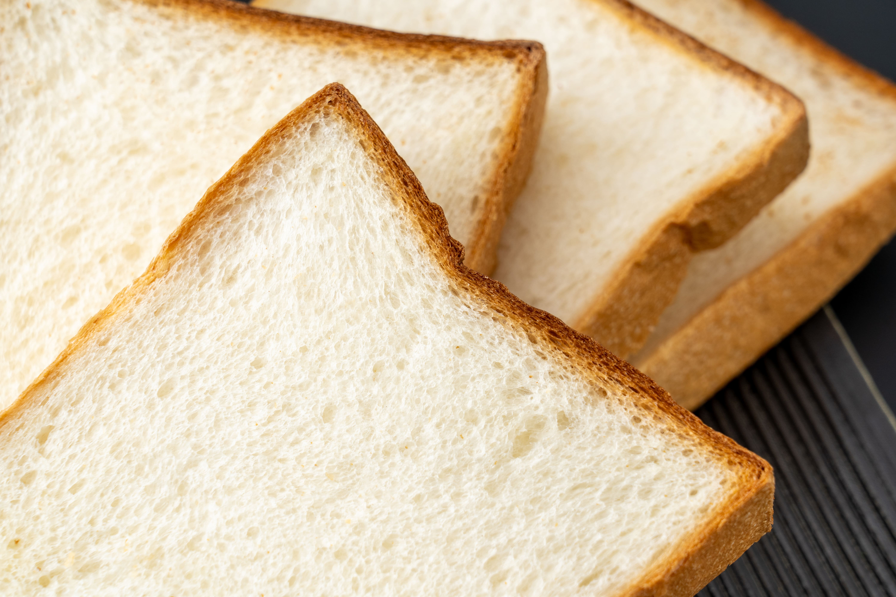
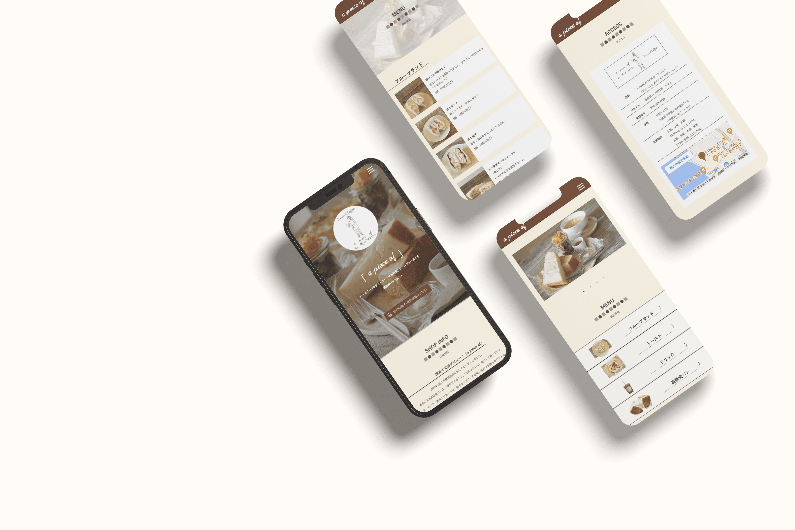

a piece of by 「僕ができること。」
Period : January 2022~ (2 months)
Role : Planning / Design / Coding
Skills : Photoshop / Illustrator / Adobe XD / Dreamweaver (HTML / CSS / jQuery / Javascript)
I was in charge of creating a new cafe site for high-end bread and cafe "a piece of".
There is a need for “want to increase the number of customer by creating a website” and “want people to see, feel, and become familiar with the atmosphere through the site”. It has a responsive design.
制作期間：2022年1月〜（2ヶ月)
担当範囲：企画 / デザイン / コーディング
使用技術：Photoshop / Illustrator / Adobe XD / Dreamweaver(HTML / CSS / jQuery / Javascript)
高級食パン＆カフェ「a piece of」様の新規カフェサイト制作を担当いたしました。
「Webサイトを作成することで利用者を増やしたい」「どんな雰囲気なのかをサイトを見て感じて、親近感を持ってもらいたい」というニーズがあり、自身自ら営業しサイトの新規作成を担当させていただきました。レスポンシブデザインになっております。

- 

Natural and relaxing, friendly and homey feeling.
In order to meet the client's request, "want people feel to be able to come to anytime, like Starbucks or Komeda's Coffee," I created a design that gives an impression of comfort and sophistication with soft.
ナチュラルでくつろぎを感じさせ、親しみやすいアットホーム感。
「スターバックスやコメダ珈琲のように、いつでも気軽に来てもらえるカフェにしたい」というクライアント様のご希望に添えるよう、柔らかさの中にも洗練されていて安心できる印象を与えられるようなデザインにしました。
- 
- 
Intention/Point :
I was particular about the selection and placement of the photos so that you could get a sense of the interior and atmosphere of the store from the site.
By adding a moderate amount of animation, I have produced a familiarity that you will not get tired of.
Problem/Solution :
Since the client distribute information mainly on Instagram and LINE, I tried to place buttons on each page to guide users. By setting the loading screen, I devised to reduce the rate of leaving the site.
意図・ポイント :
サイトから店内の様子や雰囲気を感じでもらえるよう、写真の選択や配置にこだわりました。
適度にアニメーションを入れることで飽きない親しみやすさを演出しました。
問題と解決策 :
InstagramとLINEを中心に情報を配信しているため、各ページにボタンを配置し誘導するよう心掛けました。Loading画面を設定することでサイト離脱率を下げる工夫をしました。